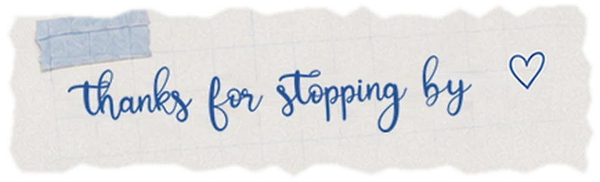
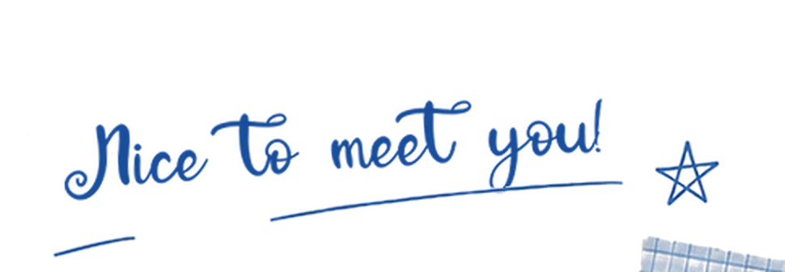
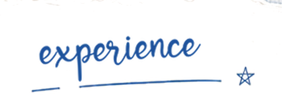
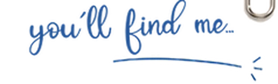
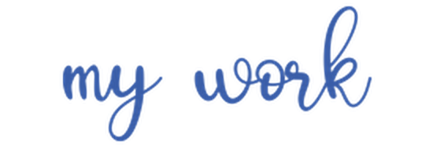

I’m a cognitive science student interested in UI/UX and AI-human interaction.
I build projects and design experiences around those interests, along with planning events and bringing people together, especially when there’s a larger purpose behind the work.
Whether I’m working on a project or with a community, what matters most to me is creating something that leaves a lasting impact.


